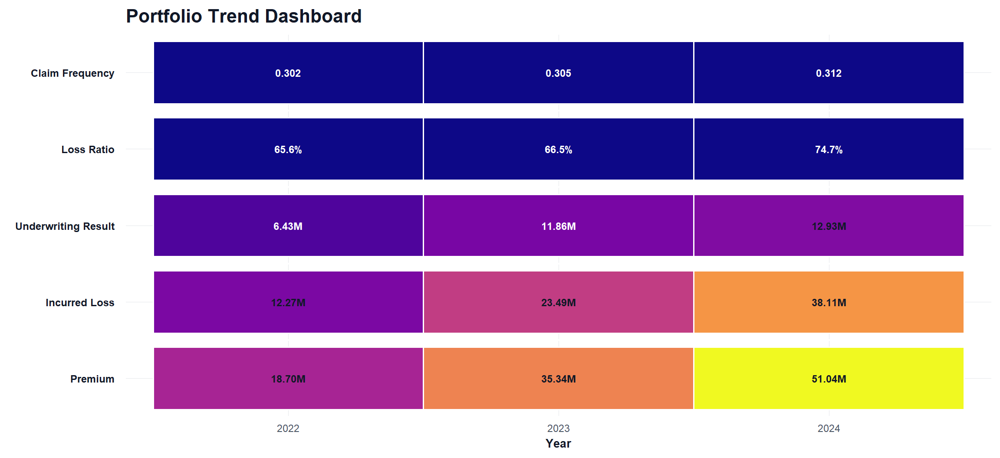
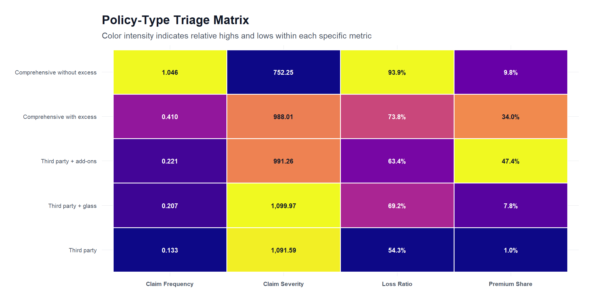
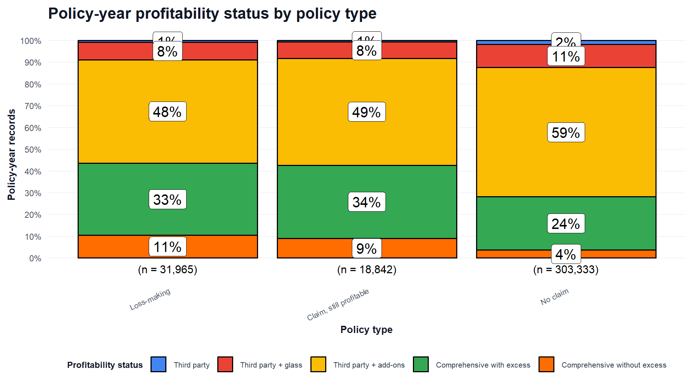
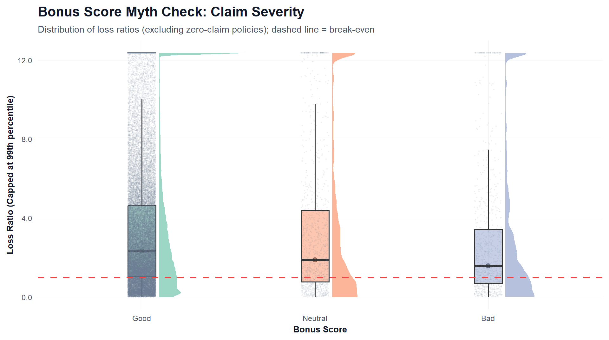
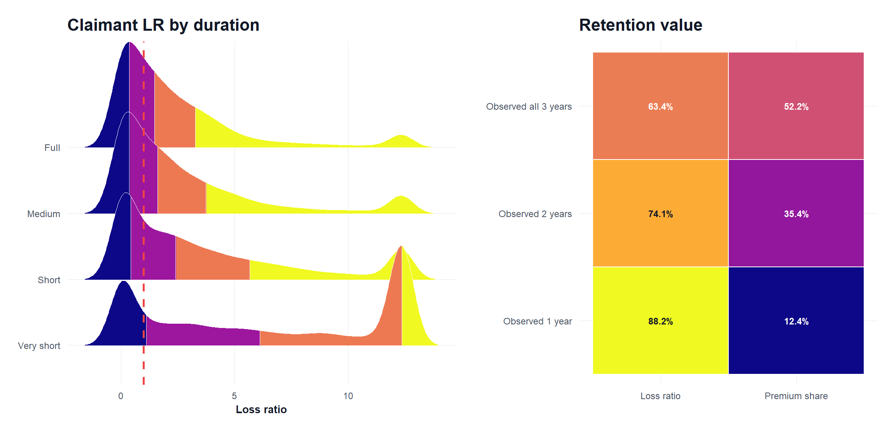
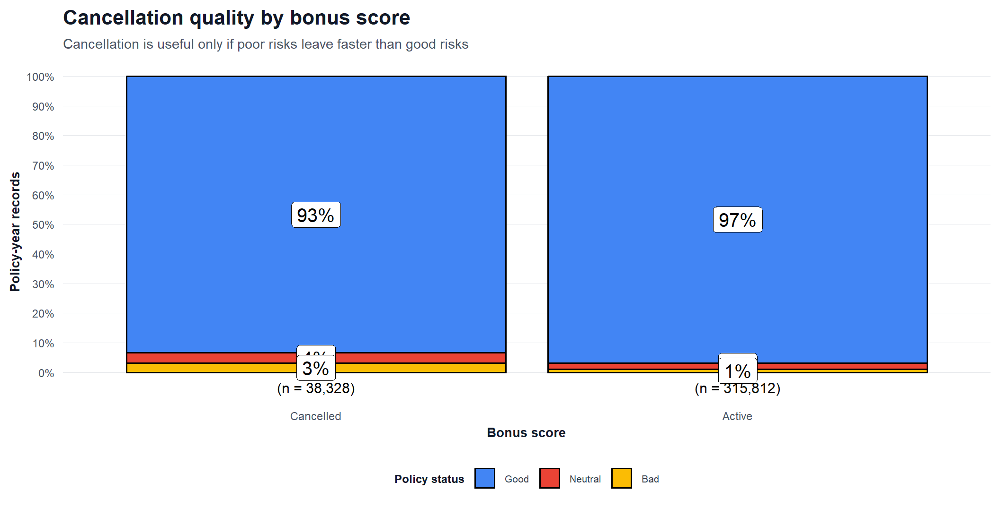
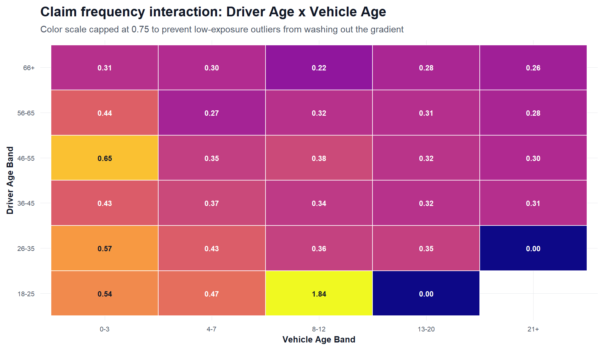
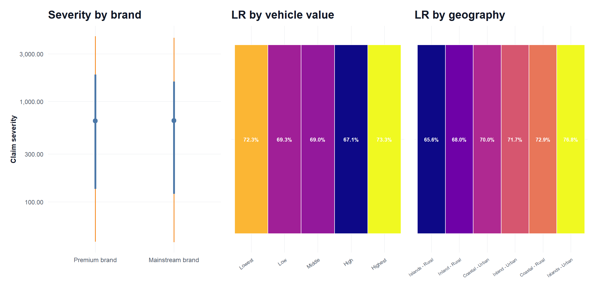

| Policy-years | Insured policies | Exposure | Premium | Incurred | Loss ratio | Claim frequency |
|---|---|---|---|---|---|---|
| 354,140 | 185,678 | 250,326 | 105,079,669 | 73,864,811 | 70.3% | 0.308 |
Method: 10 mythbusting research questions, tidyverse data wrangling, and best-fit ggplot visual analytics
The portfolio is profitable overall, but profitability is uneven.
| Strategic objective | Main finding | Business action |
| Profitability | Comprehensive without excess and very short-exposure policies create the clearest pressure. | Review excess design, short-duration loading, and claims controls. |
| Retention | Customers observed all 3 years are materially more profitable than one-year customers. | Protect low-risk loyal customers from blunt repricing. |
| Calibrated pricing | Some stereotypes are real, but many are mixed. | Price using frequency, severity, materiality, and evidence together. |
Executive summary and objectives
Methodology, data, and technique rationale
Portfolio trend and policy-type triage
Mythbusting findings by risk dimension
Answers to the 10 research questions
Recommendations
Core question: which insurance stereotypes are real, and which are myths?
The strategic objectives are to:
The analysis answers 10 research questions covering:
| Decision need | Visual technique |
| Profitability pressure | KPI tiles with embedded geom_text() labels |
| Frequency vs severity diagnosis | KPI matrices and stat_pointinterval() |
| Retention and loyalty value | KPI bars by observed customer duration |
| Stereotype overlap | Half-eye distributions and boxplots |
| Hidden short-exposure risk | Ridgelines with quantile shading |
| Interaction risk | Heatmaps with embedded labels |
| Policy-years | Insured policies | Exposure | Premium | Incurred | Loss ratio | Claim frequency |
|---|---|---|---|---|---|---|
| 354,140 | 185,678 | 250,326 | 105,079,669 | 73,864,811 | 70.3% | 0.308 |








| RQ | Verdict | Answer |
|---|---|---|
| RQ1 | Mixed | 18-25 has highest frequency (0.488) but only 62.5% LR; worst age LR is 26-35. |
| RQ2 | Partly real | 0-3 vehicles claim most often (0.524), but worst LR is 13-20 (75.2%). |
| RQ3 | Busted | Comprehensive without excess has 93.9% LR and 1.046 frequency. |
| RQ4 | Mostly busted | Premium brands have higher frequency but lower LR (68.9%) than mainstream brands (70.7%). |
| RQ5 | Mixed | Highest-value LR is 73.3%, but lowest-value LR is also weak at 72.3%. |
| RQ6 | Mostly real | Bad has highest frequency (0.624); Neutral has highest LR (81.4%). |
| RQ7 | Busted | Very short exposure is above break-even at 103.3% LR. |
| RQ8 | Busted | Observed all 3 years has best LR (63.4%) versus one-year customers (88.2%). |
| RQ9 | Real | Cancelled policies are worse: 128.0% LR versus active 64.4%. |
| RQ10 | Mixed | Urban has higher frequency and LR; rural has higher severity (995.91). |
Retain longer-observed customers with strong profitability.
Review comprehensive without excess and very short-exposure policies first.
Detect cancellation-prone poor risks earlier, before losses emerge.
Use age, brand, vehicle value, and geography as calibrated signals, not stereotypes.
Treat the priority queue as a review list, not as a pricing model.